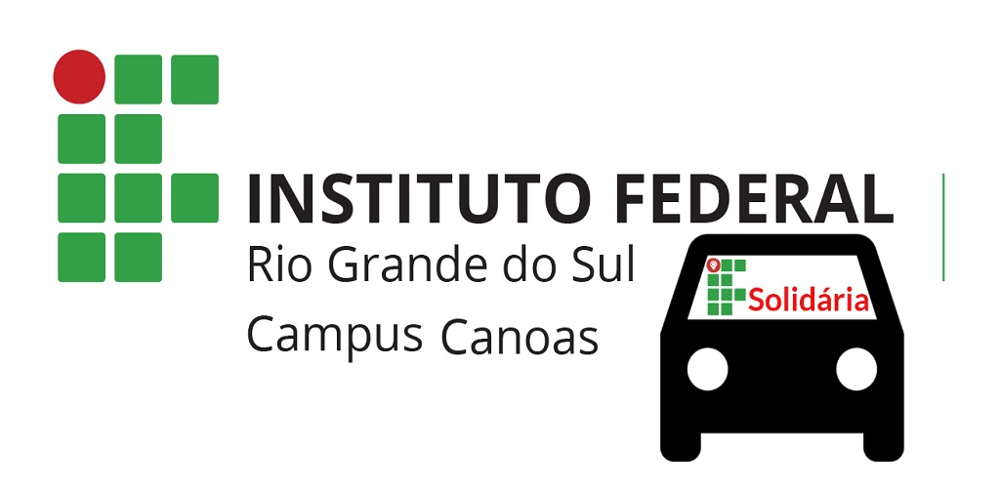

IFCaronaSolidaria
Este trabalho tem como objetivo projetar e desenvolver o MVP da aplicação “IFcaronaSolidária”. Finalizar o client-side em Android e implementar um web service que possa servir como back-end para a aplicação, fornecendo uma nova opção de transporte alternativo para os estudantes e professores do IFRS - Campus Canoas que além de facilitar o acesso às dependências do Campus Canoas ainda possibilita maior interação e responsabilidade social.
